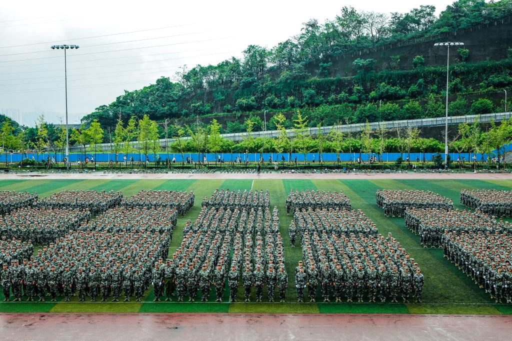
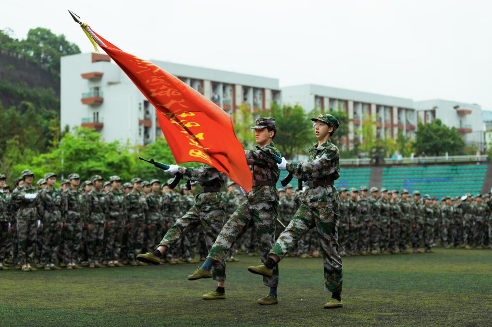
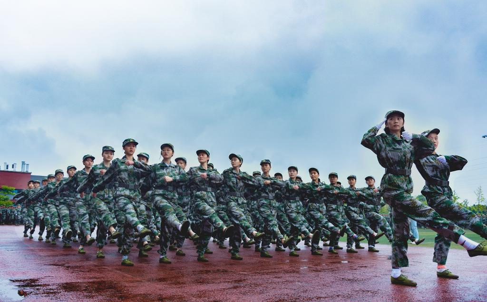

专业设置
新闻详情
新生军训汇报表演
3月19日，全省2015年度基础教育工作会议在蓉召开。会议回顾总结2014年全省基础教育重点工作完成情况，研究分析当前教育改革发展的形势，部署2015年基础教育改革发展的主要任务。省教育纪工委书记、省纪委驻教育厅纪检组长狄志军，省教育厅副厅长何浩分别就相关工作进行了部署。省人民政府教育督导团总督学刘东主持会议。
 仪仗队一 刘能 摄
仪仗队一 刘能 摄
总结回顾了2014年全省基础教育重点工作完成情况后，何浩分析了当前基础教育改革发展面临的新形势。他指出，习近平总书记对“四个全面”的战略部署和“新常态”的重大判断要深入学习，正确把握。要以此为参照，正确分析和定位当前基础教育的形势，找准结合点、把住着力点，引领和推动事业科学发展。要在“四个全面”的总体布局中定位基础教育；充分认识经济新常态对提高基础教育质量的新机遇；充分认识经济新常态对促进基础教育公平的新要求；充分认识经济新常态对深化基础教育改革的新任务；充分认识经济新常态对推进基础教育治理的新挑战。
 队列方阵 刘能 摄  仪仗队特写 刘能 摄  女生方队 刘能 摄 刺刀阵 刘能 摄